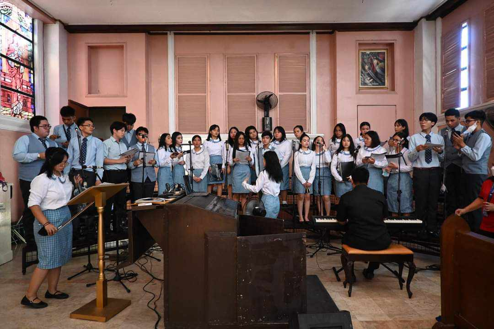
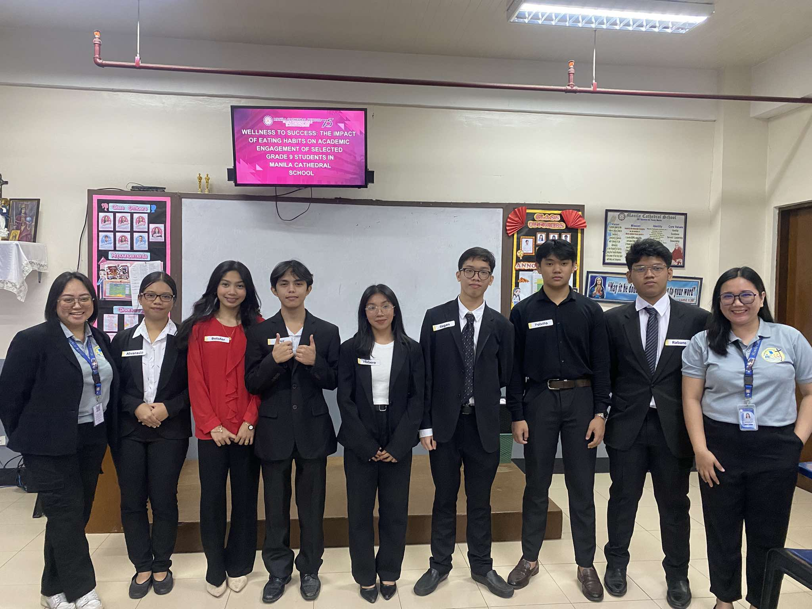

Joined many different clubs throughout the years, but the mainstay was always the choir. Back in her elementary days, Keizzy has performed and sang yearly in different programs. She carried this passion to her junior and senior high years where she joined the LIKSARI Vocal Ensemble and the Glee Club. Additionally, she took the auditor position in the Glee club during her senior year.
Led their group in their final research both in junior and senior high.
